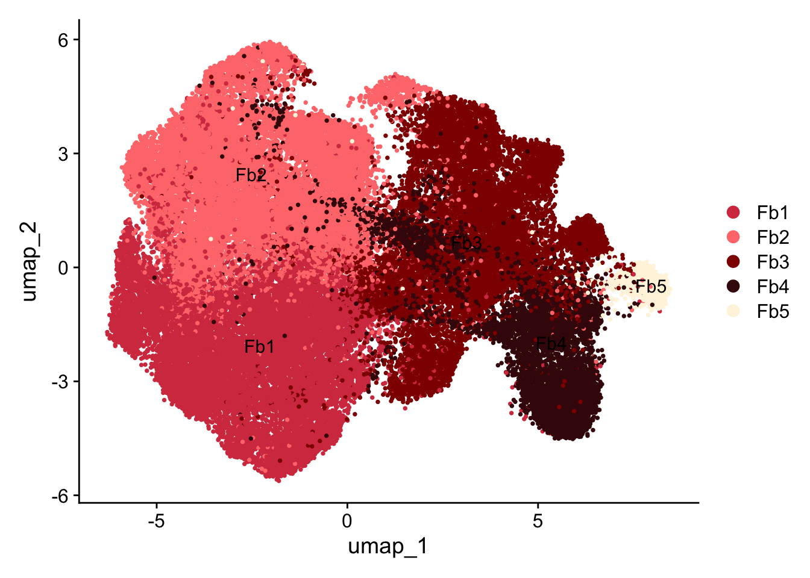
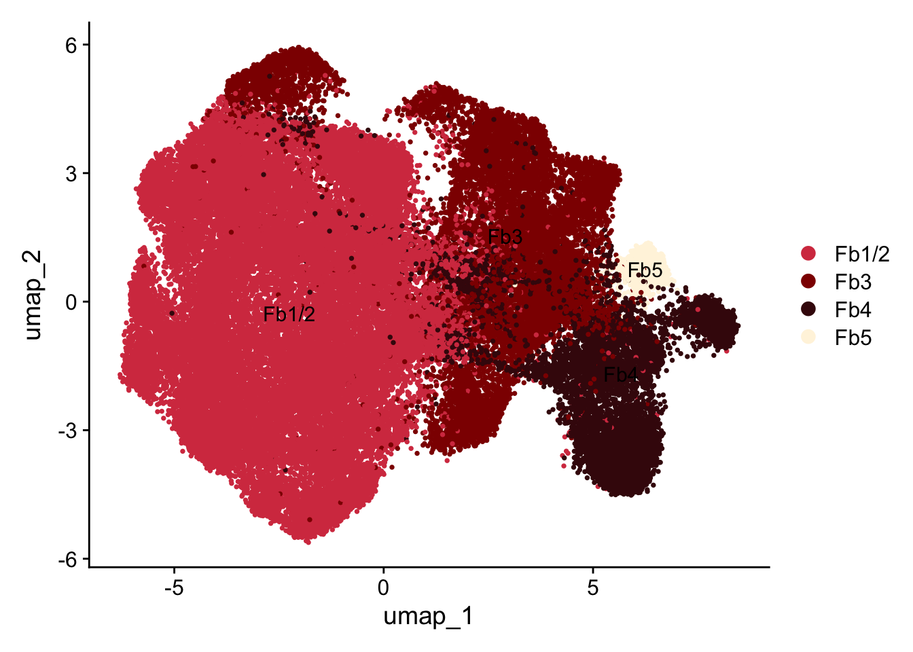
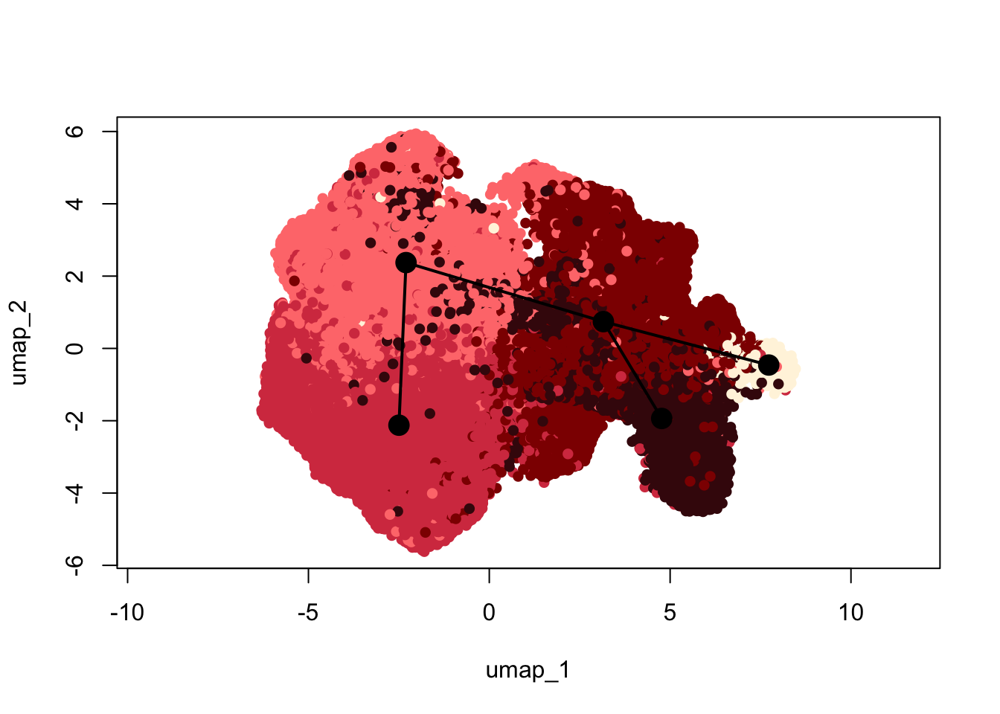
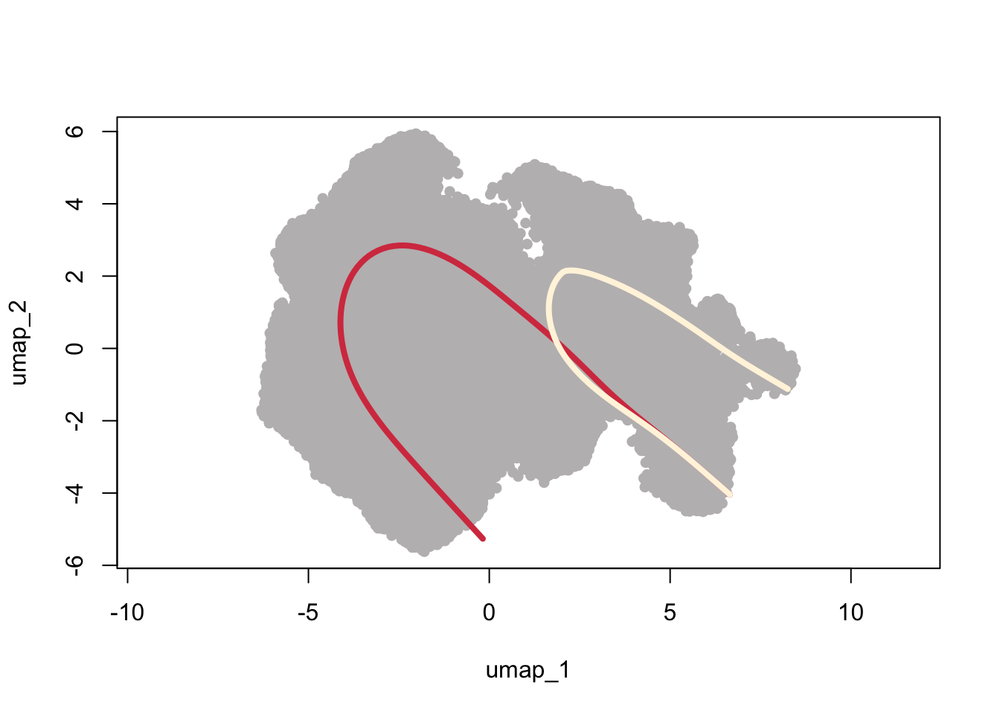
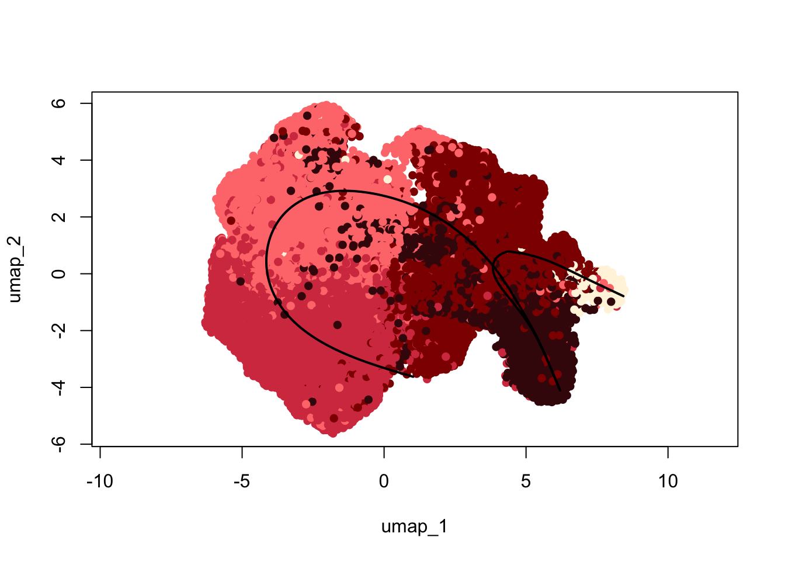
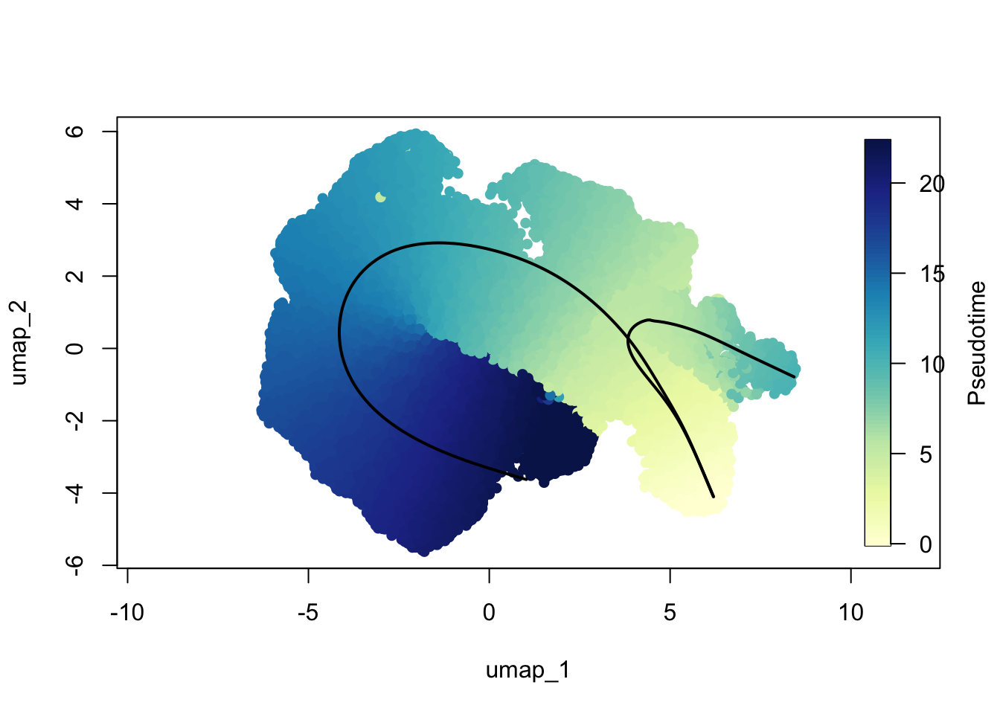
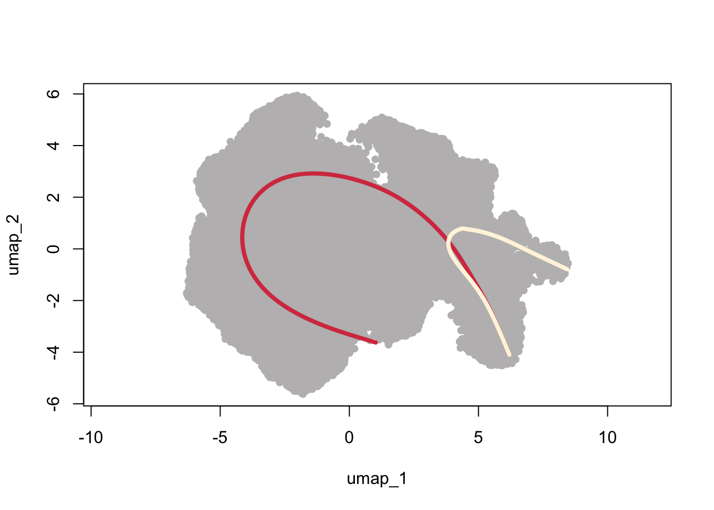
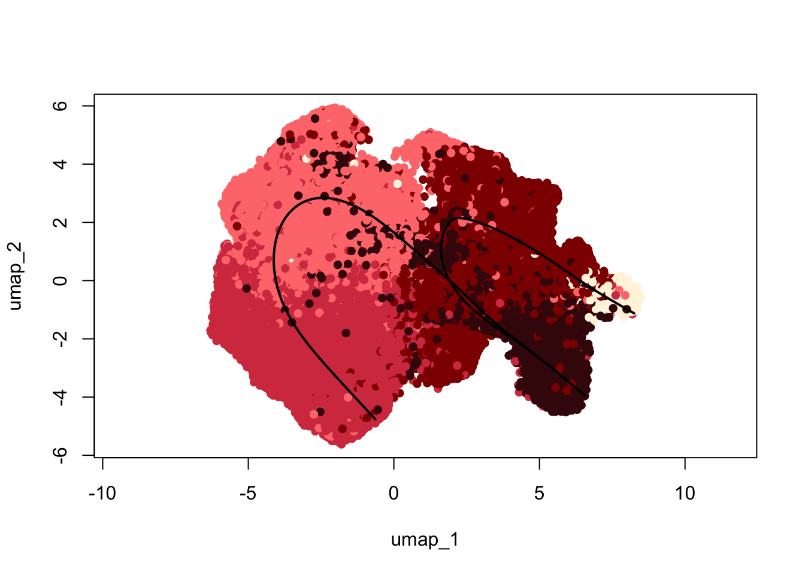
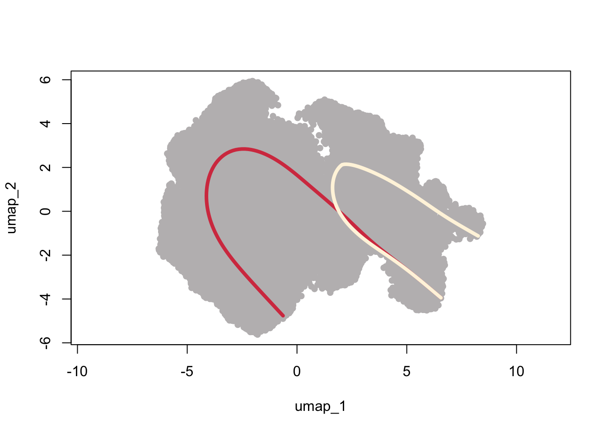

slingshotIntFb
A.DeMartin
2025-07-23
Last updated: 2025-08-10
Checks: 6 1
Knit directory: HumanHeartCarTrans2/
This reproducible R Markdown analysis was created with workflowr (version 1.7.1). The Checks tab describes the reproducibility checks that were applied when the results were created. The Past versions tab lists the development history.
Great! Since the R Markdown file has been committed to the Git repository, you know the exact version of the code that produced these results.
Great job! The global environment was empty. Objects defined in the global environment can affect the analysis in your R Markdown file in unknown ways. For reproduciblity it’s best to always run the code in an empty environment.
The command set.seed(20250218) was run prior to running
the code in the R Markdown file. Setting a seed ensures that any results
that rely on randomness, e.g. subsampling or permutations, are
reproducible.
Great job! Recording the operating system, R version, and package versions is critical for reproducibility.
Nice! There were no cached chunks for this analysis, so you can be confident that you successfully produced the results during this run.
Using absolute paths to the files within your workflowr project makes it difficult for you and others to run your code on a different machine. Change the absolute path(s) below to the suggested relative path(s) to make your code more reproducible.
| absolute | relative |
|---|---|
| /Users/immbio/Desktop/Project/Angelina/HumanHeartCarTrans2/data/Human_heart_IntFb.rds | data/Human_heart_IntFb.rds |
Great! You are using Git for version control. Tracking code development and connecting the code version to the results is critical for reproducibility.
The results in this page were generated with repository version 3a33014. See the Past versions tab to see a history of the changes made to the R Markdown and HTML files.
Note that you need to be careful to ensure that all relevant files for
the analysis have been committed to Git prior to generating the results
(you can use wflow_publish or
wflow_git_commit). workflowr only checks the R Markdown
file, but you know if there are other scripts or data files that it
depends on. Below is the status of the Git repository when the results
were generated:
Ignored files:
Ignored: .DS_Store
Ignored: .Rhistory
Ignored: .Rproj.user/
Ignored: analysis/.DS_Store
Ignored: analysis/.Rhistory
Ignored: data/seurat files/
Ignored: data/tradeSEQ/
Note that any generated files, e.g. HTML, png, CSS, etc., are not included in this status report because it is ok for generated content to have uncommitted changes.
These are the previous versions of the repository in which changes were
made to the R Markdown (analysis/slingshotIntFb.Rmd) and
HTML (docs/slingshotIntFb.html) files. If you’ve configured
a remote Git repository (see ?wflow_git_remote), click on
the hyperlinks in the table below to view the files as they were in that
past version.
| File | Version | Author | Date | Message |
|---|---|---|---|---|
| Rmd | 7a6fbfa | angeldemartin | 2025-08-07 | Aug08 |
| Rmd | 5cfc5f2 | angeldemartin | 2025-07-28 | july28-25 |
| html | 5cfc5f2 | angeldemartin | 2025-07-28 | july28-25 |
load packages
load file IntFb
fileNam <- "/Users/immbio/Desktop/Project/Angelina/HumanHeartCarTrans2/data/Human_heart_IntFb.rds"
seuratIntFb <- readRDS(fileNam)
table(seuratIntFb$dataset)
331571_3-5_20231012_Hu_nucseq_USZ_HTx001 331571_4-6_20231012_Hu_nucseq_USZ_HTx002
1422 833
334131_01-1_20231103_Hu_nucseq_USZ_HTx002_RV 334131_02-2_20231103_Hu_nucseq_USZ_HTx003_LV
1708 1053
334131_03-3_20231103_Hu_nucseq_USZ_HTx004_RV 334131_04-4_20231106_Hu_nucseq_USZ_HTx003_RV
1280 713
334131_05-5_20231106_Hu_nucseq_USZ_HTx004_LV 334131_06-6_20231106_Hu_nucseq_USZ_HTx005_RV
1873 974
334131_07-7_20231107_Hu_nucseq_USZ_HTx005_LV 334131_08-8_20231107_Hu_nucseq_USZ_HTx006_RV
561 798
334131_09-9_20231108_Hu_nucseq_USZ_HTx006_LV 334131_10-10_20231108_Hu_nucseq_USZ_HTx001_RV
1650 1238
336431_07-7_20231129_Hu_nucseq_USZ_HTx008_RV 336431_08-8_20231129_Hu_nucseq_USZ_EMB001_V1
1802 177
336431_09-9_20231129_Hu_nucseq_USZ_HTx008_LV 336431_10-10_20231129_Hu_nucseq_USZ_EMB005_V1
1612 370
336431_11-11_20231129_Hu_nucseq_USZ_EMB006_V1 336431_12-12_20231129_Hu_nucseq_USZ_EMB007_V1
217 556
336431_13-13_20231129_Hu_nucseq_USZ_EMB002_V1 336431_14-14_20231129_Hu_nucseq_USZ_EMB003_V1
306 799
336431_15-15_20231129_Hu_nucseq_USZ_EMB004_V1 340821_01-7_20240118_Hu_nucseq_USZ_EMB007_V2
300 484
340821_02-8_20240118_Hu_nucseq_USZ_EMB008_V2 340821_03-9_20240123_Hu_nucseq_USZ_EMB001_V3
225 31
340821_04-10_20240123_Hu_nucseq_USZ_EMB002_V3 340821_05-11_20240123_Hu_nucseq_USZ_EMB003_V3
176 60
340821_06-12_20240123_Hu_nucseq_USZ_EMB004_V3 340821_07-13_20240123_Hu_nucseq_USZ_EMB005_V3
255 941
340821_08-14_20240123_Hu_nucseq_USZ_EMB006_V3 340821_09-15_20240123_Hu_nucseq_USZ_EMB007_V3
82 130
340821_10-16_20240123_Hu_nucseq_USZ_EMB008_V3 340821_11-17_20240123_Hu_nucseq_USZ_EMB008_V1
81 18
340821_12-18_20240123_Hu_nucseq_USZ_HTx007_RV 340821_13-19_20240123_Hu_nucseq_USZ_HTx007_LV
1457 979
340831_1-1_20240118_Hu_nucseq_USZ_EMB001_V2 340831_2-2_20240118_Hu_nucseq_USZ_EMB002_V2
417 924
340831_3-3_20240118_Hu_nucseq_USZ_EMB003_V2 340831_4-4_20240118_Hu_nucseq_USZ_EMB004_V2
126 190
340831_5-5_20240118_Hu_nucseq_USZ_EMB005_V2 340831_6-6_20240118_Hu_nucseq_USZ_EMB006_V2
205 343
347741_4-4_20240326_Hu_nucseq_USZ_HTx010_RV 347741_5-5_20240326_Hu_nucseq_USZ_HTx010_LV
497 887
353921_01-1_20240515_Hu_nucseq_USZ_HTx011_RV 353921_02-2_20240515_Hu_nucseq_USZ_HTx011_LV
618 383
353921_03-3_20240515_Hu_nucseq_USZ_EMB011_V1 353921_04-4_20240515_Hu_nucseq_USZ_EMB011_V2
293 100
353921_05-5_20240515_Hu_nucseq_USZ_HTx012_RV 353921_06-6_20240515_Hu_nucseq_USZ_HTx012_LV
287 922
353921_07-7_20240515_Hu_nucseq_USZ_EMB012_V1 353921_08-8_20240515_Hu_nucseq_USZ_EMB010_V3
230 207
353921_09-9_20240515_Hu_nucseq_USZ_HTx013_RV 353921_10-10_20240515_Hu_nucseq_USZ_HTx013_LV
323 309
353921_11-11_20240515_Hu_nucseq_USZ_EMB010_V1_1 353921_12-12_20240515_Hu_nucseq_USZ_EMB010_V1_2
368 98
353921_13-13_20240524_Hu_nucseq_USZ_HTx015_RV 353921_14-14_20240524_Hu_nucseq_USZ_EMB011_V3
802 238
353921_15-15_20240524_Hu_nucseq_USZ_EMB012_V2 353921_17-17_20240524_Hu_nucseq_USZ_HTx015_LV
766 827
353921_18-18_20240524_Hu_nucseq_USZ_EMB013_V1 353921_19-19_20240524_Hu_nucseq_USZ_EMB013_V2
111 47
353921_20-20_20240524_Hu_nucseq_USZ_EMB013_V3 353921_21-21_20240524_Hu_nucseq_USZ_HTx014_RV
66 1478
353921_22-22_20240524_Hu_nucseq_USZ_HTx014_LV 353921_23-23_20240524_Hu_nucseq_USZ_EMB014_V1
1287 238
353921_24-24_20240524_Hu_nucseq_USZ_EMB014_V2 359861_01-1_20240715_Hu_nucseq_USZ_HTx016_LV
116 2523
359861_02-2_20240715_Hu_nucseq_USZ_HTx016_RV 359861_03-3_20240715_Hu_nucseq_USZ_EMB014_V3
3601 129
359861_04-4_20240715_Hu_nucseq_USZ_EMB015_V1 359861_05-5_20240715_Hu_nucseq_USZ_EMB015_V2
27 39
359861_06-6_20240715_Hu_nucseq_USZ_EMB015_V3 359861_07-7_20240715_Hu_nucseq_USZ_EMB016_V1
202 149
359861_08-8_20240715_Hu_nucseq_USZ_EMB016_V2 359861_18-10_20240730_Hu_nucseq_USZ_EMB016_V3
32 102
373291_14-6_20241212_Hu_nucseq_USZ_HTx018_expRV 373291_15-7_20241212_Hu_nucseq_USZ_HTx018_expLV
53 132
373291_16-8_20241212_Hu_nucseq_USZ_HTx018_V1 373291_17-9_20241212_Hu_nucseq_USZ_HTx018_V2
13 38
373291_18-10_20241212_Hu_nucseq_USZ_HTx018_V3 o28576_1_08-8_20220525_Hu_nucseq_Graz_8_HH_GEM
4 1145
o28576_1_10-10_20220525_Hu_nucseq_Graz_10_HH_GEM o28576_1_11-11_20220525_Hu_nucseq_Graz_11_HH_GEM
1024 821
o28576_1_12-12_20220525_Hu_nucseq_Graz_12_HH_GEM o292731_1-1_20220818_Hu_nucseq_Graz_9_HH_GEM
1108 1839
o292731_2-2_20220818_Hu_nucseq_Graz_13_HH_GEM o294781_01-1_20220912_Hu_nucseq_Graz_21_HH_GEM
2441 87
o294781_02-2_20220912_Hu_nucseq_Graz_22_HH_GEM o294781_03-3_20220912_Hu_nucseq_Graz_23_HH_GEM
321 70
o294781_04-4_20220912_Hu_nucseq_Graz_24_HH_GEM
395 colAllFb <- c("#D53E4F","#f4a582","#ff7b7b","#8e0b00","#FEE08B","#42090D","#FF7B00","#FFF4DF")
names(colAllFb) <- c("Fb1","PerivFb1","Fb2","Fb3","VSMC","Fb4","PerivFb2", "Fb5")
colIntFb <- c("#D53E4F","#8e0b00","#42090D","#FFF4DF")
names(colIntFb) <- c("Fb1/2","Fb3","Fb4", "Fb5")umap
Idents(seuratIntFb) <- seuratIntFb$clusterNameAllFb
DimPlot(seuratIntFb, reduction = "umap", pt.size = 0.5, cols = colAllFb, label = TRUE)
| Version | Author | Date |
|---|---|---|
| 5cfc5f2 | angeldemartin | 2025-07-28 |
Idents(seuratIntFb) <- seuratIntFb$clusterNameIntFb
DimPlot(seuratIntFb, reduction = "umap", pt.size = 0.5, cols = colIntFb, label = TRUE)
| Version | Author | Date |
|---|---|---|
| 5cfc5f2 | angeldemartin | 2025-07-28 |
convert to sce
##convert seurat object to sce object
sce <- as.SingleCellExperiment(seuratIntFb)slingshot
## set Fb4 as startpoint
sce <- slingshot(sce, clusterLabels = 'clusterNameAllFb', reducedDim = 'UMAP',
start.clus="Fb4",
#dist.method="simple",
#extend = 'n',
#stretch=0
)clustDat <- data.frame(clustCol=colAllFb) %>% rownames_to_column(., "cluster")
colDat <- data.frame(cluster=seuratIntFb$clusterNameAllFb) %>% left_join(., clustDat, by="cluster") plot(reducedDims(sce)$UMAP, col = colDat$clustCol, pch=16, asp = 1)
lines(SlingshotDataSet(sce), lwd=2, type = 'lineages', col = 'black')
| Version | Author | Date |
|---|---|---|
| 5cfc5f2 | angeldemartin | 2025-07-28 |
plot(reducedDims(sce)$UMAP, col = colDat$clustCol, pch=16, asp = 1)
lines(SlingshotDataSet(sce), lwd=2, col='black')
| Version | Author | Date |
|---|---|---|
| 5cfc5f2 | angeldemartin | 2025-07-28 |
colors <- colorRampPalette(brewer.pal(11,'YlGnBu'))(100)
plotcol <- colors[cut(slingAvgPseudotime(SlingshotDataSet(sce)), breaks=100)]
plot(reducedDims(sce)$UMAP, col = plotcol, pch=16, asp = 1)
lines(SlingshotDataSet(sce), lwd=2, col='black')
| Version | Author | Date |
|---|---|---|
| 5cfc5f2 | angeldemartin | 2025-07-28 |
### color lineages
colLin <- c("#D53E4F","#FFF4DF")
names(colLin) <- c("1", "2")
plot(reducedDims(sce)$UMAP, col = "#bfbcbd", pch=16, asp = 1)
lines(SlingshotDataSet(sce), lwd=4, col=colLin)
| Version | Author | Date |
|---|---|---|
| 5cfc5f2 | angeldemartin | 2025-07-28 |
slingshot-v2
## set Fb4 as startpoint
sce <- slingshot(sce, clusterLabels = 'clusterNameAllFb', reducedDim = 'UMAP',
start.clus="Fb4",
dist.method="simple",
extend = 'n',
stretch=0
)plot(reducedDims(sce)$UMAP, col = colDat$clustCol, pch=16, asp = 1)
lines(SlingshotDataSet(sce), lwd=2, type = 'lineages', col = 'black')
| Version | Author | Date |
|---|---|---|
| 5cfc5f2 | angeldemartin | 2025-07-28 |
plot(reducedDims(sce)$UMAP, col = colDat$clustCol, pch=16, asp = 1)
lines(SlingshotDataSet(sce), lwd=2, col='black')
| Version | Author | Date |
|---|---|---|
| 5cfc5f2 | angeldemartin | 2025-07-28 |
colors <- colorRampPalette(brewer.pal(11,'YlGnBu'))(100)
pseudotime <- slingAvgPseudotime(SlingshotDataSet(sce))
plotcol <- colors[cut(pseudotime, breaks=100)]
plot(reducedDims(sce)$UMAP, col = plotcol, pch=16, asp = 1)
lines(SlingshotDataSet(sce), lwd=2, col='black')
## add color bar legend
image.plot(legend.only = TRUE,
zlim = range(pseudotime, na.rm = TRUE),
col = colors,
legend.args = list(text = "Pseudotime", side = 4, line = 2.5))
| Version | Author | Date |
|---|---|---|
| 5cfc5f2 | angeldemartin | 2025-07-28 |
## color lineages
colLin <- c("#D53E4F","#FFF4DF")
names(colLin) <- c("1", "2")
plot(reducedDims(sce)$UMAP, col = "#bfbcbd", pch=16, asp = 1)
lines(SlingshotDataSet(sce), lwd=4, col=colLin)
| Version | Author | Date |
|---|---|---|
| 5cfc5f2 | angeldemartin | 2025-07-28 |
slingshot-v3
## set Fb4 as startpoint
sce <- slingshot(sce, clusterLabels = 'clusterNameAllFb', reducedDim = 'UMAP',
start.clus="Fb4",
dist.method="slingshot",
extend = 'n',
stretch=0
)plot(reducedDims(sce)$UMAP, col = colDat$clustCol, pch=16, asp = 1)
lines(SlingshotDataSet(sce), lwd=2, type = 'lineages', col = 'black')
| Version | Author | Date |
|---|---|---|
| 5cfc5f2 | angeldemartin | 2025-07-28 |
plot(reducedDims(sce)$UMAP, col = colDat$clustCol, pch=16, asp = 1)
lines(SlingshotDataSet(sce), lwd=2, col='black')
| Version | Author | Date |
|---|---|---|
| 5cfc5f2 | angeldemartin | 2025-07-28 |
## color lineages
colLin <- c("#D53E4F","#FFF4DF")
names(colLin) <- c("1", "2")
plot(reducedDims(sce)$UMAP, col = "#bfbcbd", pch=16, asp = 1)
lines(SlingshotDataSet(sce), lwd=4, col=colLin)
| Version | Author | Date |
|---|---|---|
| 5cfc5f2 | angeldemartin | 2025-07-28 |
session info
date()[1] "Sun Aug 10 18:14:33 2025"sessionInfo()R version 4.4.0 (2024-04-24)
Platform: x86_64-apple-darwin20
Running under: macOS Ventura 13.7.6
Matrix products: default
BLAS: /Library/Frameworks/R.framework/Versions/4.4-x86_64/Resources/lib/libRblas.0.dylib
LAPACK: /Library/Frameworks/R.framework/Versions/4.4-x86_64/Resources/lib/libRlapack.dylib; LAPACK version 3.12.0
locale:
[1] en_US.UTF-8/en_US.UTF-8/en_US.UTF-8/C/en_US.UTF-8/en_US.UTF-8
time zone: Europe/Zurich
tzcode source: internal
attached base packages:
[1] grid stats4 stats graphics grDevices utils datasets methods base
other attached packages:
[1] fields_16.3.1 spam_2.11-1 RColorBrewer_1.1-3
[4] slingshot_2.12.0 TrajectoryUtils_1.12.0 princurve_2.1.6
[7] NCmisc_1.2.0 VennDiagram_1.7.3 futile.logger_1.4.3
[10] ggupset_0.4.1 gridExtra_2.3 DOSE_3.30.5
[13] enrichplot_1.24.4 msigdbr_25.1.1 org.Hs.eg.db_3.19.1
[16] AnnotationDbi_1.66.0 clusterProfiler_4.12.6 multtest_2.60.0
[19] metap_1.12 scater_1.32.1 scuttle_1.14.0
[22] destiny_3.18.0 circlize_0.4.16 muscat_1.18.0
[25] viridis_0.6.5 viridisLite_0.4.2 lubridate_1.9.4
[28] forcats_1.0.0 stringr_1.5.1 purrr_1.1.0
[31] readr_2.1.5 tidyr_1.3.1 tibble_3.3.0
[34] tidyverse_2.0.0 dplyr_1.1.4 SingleCellExperiment_1.26.0
[37] SummarizedExperiment_1.34.0 Biobase_2.64.0 GenomicRanges_1.56.2
[40] GenomeInfoDb_1.40.1 IRanges_2.38.1 S4Vectors_0.42.1
[43] BiocGenerics_0.50.0 MatrixGenerics_1.16.0 matrixStats_1.5.0
[46] pheatmap_1.0.13 ggpubr_0.6.1 ggplot2_3.5.2
[49] Seurat_5.3.0 SeuratObject_5.1.0 sp_2.2-0
[52] runSeurat3_0.1.0 ExploreSCdataSeurat3_0.1.0
loaded via a namespace (and not attached):
[1] igraph_2.1.4 ica_1.0-3 plotly_4.11.0
[4] Formula_1.2-5 maps_3.4.3 zlibbioc_1.50.0
[7] tidyselect_1.2.1 bit_4.6.0 doParallel_1.0.17
[10] clue_0.3-66 lattice_0.22-7 rjson_0.2.23
[13] blob_1.2.4 S4Arrays_1.4.1 pbkrtest_0.5.5
[16] parallel_4.4.0 png_0.1-8 plotrix_3.8-4
[19] cli_3.6.5 ggplotify_0.1.2 goftest_1.2-3
[22] VIM_6.2.2 variancePartition_1.34.0 BiocNeighbors_1.22.0
[25] shadowtext_0.1.5 uwot_0.2.3 curl_6.4.0
[28] tidytree_0.4.6 mime_0.13 evaluate_1.0.4
[31] ComplexHeatmap_2.20.0 stringi_1.8.7 backports_1.5.0
[34] lmerTest_3.1-3 qqconf_1.3.2 httpuv_1.6.16
[37] magrittr_2.0.3 rappdirs_0.3.3 splines_4.4.0
[40] ggraph_2.2.1 sctransform_0.4.2 ggbeeswarm_0.7.2
[43] DBI_1.2.3 jquerylib_0.1.4 smoother_1.3
[46] withr_3.0.2 git2r_0.36.2 corpcor_1.6.10
[49] reformulas_0.4.1 class_7.3-23 rprojroot_2.1.0
[52] lmtest_0.9-40 tidygraph_1.3.1 formatR_1.14
[55] colourpicker_1.3.0 htmlwidgets_1.6.4 fs_1.6.6
[58] ggrepel_0.9.6 labeling_0.4.3 fANCOVA_0.6-1
[61] SparseArray_1.4.8 DESeq2_1.44.0 ranger_0.17.0
[64] DEoptimR_1.1-4 reticulate_1.43.0 hexbin_1.28.5
[67] zoo_1.8-14 XVector_0.44.0 knitr_1.50
[70] ggplot.multistats_1.0.1 UCSC.utils_1.0.0 RhpcBLASctl_0.23-42
[73] timechange_0.3.0 foreach_1.5.2 patchwork_1.3.1
[76] caTools_1.18.3 ggtree_3.12.0 data.table_1.17.8
[79] R.oo_1.27.1 RSpectra_0.16-2 irlba_2.3.5.1
[82] gridGraphics_0.5-1 fastDummies_1.7.5 lazyeval_0.2.2
[85] yaml_2.3.10 survival_3.8-3 scattermore_1.2
[88] crayon_1.5.3 RcppAnnoy_0.0.22 progressr_0.15.1
[91] tweenr_2.0.3 later_1.4.2 ggridges_0.5.6
[94] codetools_0.2-20 GlobalOptions_0.1.2 aod_1.3.3
[97] KEGGREST_1.44.1 Rtsne_0.17 shape_1.4.6.1
[100] limma_3.60.6 pkgconfig_2.0.3 TMB_1.9.17
[103] spatstat.univar_3.1-4 mathjaxr_1.8-0 EnvStats_3.1.0
[106] aplot_0.2.8 scatterplot3d_0.3-44 ape_5.8-1
[109] spatstat.sparse_3.1-0 xtable_1.8-4 car_3.1-3
[112] plyr_1.8.9 httr_1.4.7 rbibutils_2.3
[115] tools_4.4.0 globals_0.18.0 beeswarm_0.4.0
[118] broom_1.0.9 nlme_3.1-168 lambda.r_1.2.4
[121] assertthat_0.2.1 lme4_1.1-37 digest_0.6.37
[124] numDeriv_2016.8-1.1 Matrix_1.7-3 farver_2.1.2
[127] tzdb_0.5.0 remaCor_0.0.18 reshape2_1.4.4
[130] yulab.utils_0.2.0 glue_1.8.0 cachem_1.1.0
[133] polyclip_1.10-7 generics_0.1.4 Biostrings_2.72.1
[136] mvtnorm_1.3-3 parallelly_1.45.1 mnormt_2.1.1
[139] statmod_1.5.0 RcppHNSW_0.6.0 ScaledMatrix_1.12.0
[142] carData_3.0-5 minqa_1.2.8 pbapply_1.7-4
[145] httr2_1.2.1 gson_0.1.0 graphlayouts_1.2.2
[148] gtools_3.9.5 ggsignif_0.6.4 RcppEigen_0.3.4.0.2
[151] shiny_1.11.1 GenomeInfoDbData_1.2.12 glmmTMB_1.1.11
[154] R.utils_2.13.0 memoise_2.0.1 rmarkdown_2.29
[157] scales_1.4.0 R.methodsS3_1.8.2 future_1.67.0
[160] RANN_2.6.2 Cairo_1.6-2 spatstat.data_3.1-6
[163] rstudioapi_0.17.1 cluster_2.1.8.1 whisker_0.4.1
[166] mutoss_0.1-13 spatstat.utils_3.1-5 hms_1.1.3
[169] fitdistrplus_1.2-4 cowplot_1.2.0 colorspace_2.1-1
[172] rlang_1.1.6 DelayedMatrixStats_1.26.0 sparseMatrixStats_1.16.0
[175] xts_0.14.1 dotCall64_1.2 shinydashboard_0.7.3
[178] ggforce_0.5.0 laeken_0.5.3 mgcv_1.9-3
[181] xfun_0.52 e1071_1.7-16 TH.data_1.1-3
[184] iterators_1.0.14 abind_1.4-8 GOSemSim_2.30.2
[187] treeio_1.28.0 futile.options_1.0.1 bitops_1.0-9
[190] Rdpack_2.6.4 promises_1.3.3 scatterpie_0.2.5
[193] RSQLite_2.4.2 qvalue_2.36.0 sandwich_3.1-1
[196] fgsea_1.30.0 DelayedArray_0.30.1 proxy_0.4-27
[199] GO.db_3.19.1 compiler_4.4.0 prettyunits_1.2.0
[202] boot_1.3-31 beachmat_2.20.0 listenv_0.9.1
[205] Rcpp_1.1.0 edgeR_4.2.2 workflowr_1.7.1
[208] BiocSingular_1.20.0 tensor_1.5.1 MASS_7.3-65
[211] progress_1.2.3 BiocParallel_1.38.0 babelgene_22.9
[214] spatstat.random_3.4-1 R6_2.6.1 fastmap_1.2.0
[217] multcomp_1.4-28 fastmatch_1.1-6 rstatix_0.7.2
[220] vipor_0.4.7 TTR_0.24.4 ROCR_1.0-11
[223] TFisher_0.2.0 rsvd_1.0.5 vcd_1.4-13
[226] nnet_7.3-20 gtable_0.3.6 KernSmooth_2.23-26
[229] miniUI_0.1.2 deldir_2.0-4 htmltools_0.5.8.1
[232] ggthemes_5.1.0 bit64_4.6.0-1 spatstat.explore_3.5-2
[235] lifecycle_1.0.4 blme_1.0-6 S7_0.2.0
[238] nloptr_2.2.1 sass_0.4.10 vctrs_0.6.5
[241] robustbase_0.99-4-1 spatstat.geom_3.5-0 sn_2.1.1
[244] ggfun_0.2.0 future.apply_1.20.0 bslib_0.9.0
[247] pillar_1.11.0 gplots_3.2.0 pcaMethods_1.96.0
[250] locfit_1.5-9.12 jsonlite_2.0.0 GetoptLong_1.0.5
sessionInfo()R version 4.4.0 (2024-04-24)
Platform: x86_64-apple-darwin20
Running under: macOS Ventura 13.7.6
Matrix products: default
BLAS: /Library/Frameworks/R.framework/Versions/4.4-x86_64/Resources/lib/libRblas.0.dylib
LAPACK: /Library/Frameworks/R.framework/Versions/4.4-x86_64/Resources/lib/libRlapack.dylib; LAPACK version 3.12.0
locale:
[1] en_US.UTF-8/en_US.UTF-8/en_US.UTF-8/C/en_US.UTF-8/en_US.UTF-8
time zone: Europe/Zurich
tzcode source: internal
attached base packages:
[1] grid stats4 stats graphics grDevices utils datasets methods base
other attached packages:
[1] fields_16.3.1 spam_2.11-1 RColorBrewer_1.1-3
[4] slingshot_2.12.0 TrajectoryUtils_1.12.0 princurve_2.1.6
[7] NCmisc_1.2.0 VennDiagram_1.7.3 futile.logger_1.4.3
[10] ggupset_0.4.1 gridExtra_2.3 DOSE_3.30.5
[13] enrichplot_1.24.4 msigdbr_25.1.1 org.Hs.eg.db_3.19.1
[16] AnnotationDbi_1.66.0 clusterProfiler_4.12.6 multtest_2.60.0
[19] metap_1.12 scater_1.32.1 scuttle_1.14.0
[22] destiny_3.18.0 circlize_0.4.16 muscat_1.18.0
[25] viridis_0.6.5 viridisLite_0.4.2 lubridate_1.9.4
[28] forcats_1.0.0 stringr_1.5.1 purrr_1.1.0
[31] readr_2.1.5 tidyr_1.3.1 tibble_3.3.0
[34] tidyverse_2.0.0 dplyr_1.1.4 SingleCellExperiment_1.26.0
[37] SummarizedExperiment_1.34.0 Biobase_2.64.0 GenomicRanges_1.56.2
[40] GenomeInfoDb_1.40.1 IRanges_2.38.1 S4Vectors_0.42.1
[43] BiocGenerics_0.50.0 MatrixGenerics_1.16.0 matrixStats_1.5.0
[46] pheatmap_1.0.13 ggpubr_0.6.1 ggplot2_3.5.2
[49] Seurat_5.3.0 SeuratObject_5.1.0 sp_2.2-0
[52] runSeurat3_0.1.0 ExploreSCdataSeurat3_0.1.0
loaded via a namespace (and not attached):
[1] igraph_2.1.4 ica_1.0-3 plotly_4.11.0
[4] Formula_1.2-5 maps_3.4.3 zlibbioc_1.50.0
[7] tidyselect_1.2.1 bit_4.6.0 doParallel_1.0.17
[10] clue_0.3-66 lattice_0.22-7 rjson_0.2.23
[13] blob_1.2.4 S4Arrays_1.4.1 pbkrtest_0.5.5
[16] parallel_4.4.0 png_0.1-8 plotrix_3.8-4
[19] cli_3.6.5 ggplotify_0.1.2 goftest_1.2-3
[22] VIM_6.2.2 variancePartition_1.34.0 BiocNeighbors_1.22.0
[25] shadowtext_0.1.5 uwot_0.2.3 curl_6.4.0
[28] tidytree_0.4.6 mime_0.13 evaluate_1.0.4
[31] ComplexHeatmap_2.20.0 stringi_1.8.7 backports_1.5.0
[34] lmerTest_3.1-3 qqconf_1.3.2 httpuv_1.6.16
[37] magrittr_2.0.3 rappdirs_0.3.3 splines_4.4.0
[40] ggraph_2.2.1 sctransform_0.4.2 ggbeeswarm_0.7.2
[43] DBI_1.2.3 jquerylib_0.1.4 smoother_1.3
[46] withr_3.0.2 git2r_0.36.2 corpcor_1.6.10
[49] reformulas_0.4.1 class_7.3-23 rprojroot_2.1.0
[52] lmtest_0.9-40 tidygraph_1.3.1 formatR_1.14
[55] colourpicker_1.3.0 htmlwidgets_1.6.4 fs_1.6.6
[58] ggrepel_0.9.6 labeling_0.4.3 fANCOVA_0.6-1
[61] SparseArray_1.4.8 DESeq2_1.44.0 ranger_0.17.0
[64] DEoptimR_1.1-4 reticulate_1.43.0 hexbin_1.28.5
[67] zoo_1.8-14 XVector_0.44.0 knitr_1.50
[70] ggplot.multistats_1.0.1 UCSC.utils_1.0.0 RhpcBLASctl_0.23-42
[73] timechange_0.3.0 foreach_1.5.2 patchwork_1.3.1
[76] caTools_1.18.3 ggtree_3.12.0 data.table_1.17.8
[79] R.oo_1.27.1 RSpectra_0.16-2 irlba_2.3.5.1
[82] gridGraphics_0.5-1 fastDummies_1.7.5 lazyeval_0.2.2
[85] yaml_2.3.10 survival_3.8-3 scattermore_1.2
[88] crayon_1.5.3 RcppAnnoy_0.0.22 progressr_0.15.1
[91] tweenr_2.0.3 later_1.4.2 ggridges_0.5.6
[94] codetools_0.2-20 GlobalOptions_0.1.2 aod_1.3.3
[97] KEGGREST_1.44.1 Rtsne_0.17 shape_1.4.6.1
[100] limma_3.60.6 pkgconfig_2.0.3 TMB_1.9.17
[103] spatstat.univar_3.1-4 mathjaxr_1.8-0 EnvStats_3.1.0
[106] aplot_0.2.8 scatterplot3d_0.3-44 ape_5.8-1
[109] spatstat.sparse_3.1-0 xtable_1.8-4 car_3.1-3
[112] plyr_1.8.9 httr_1.4.7 rbibutils_2.3
[115] tools_4.4.0 globals_0.18.0 beeswarm_0.4.0
[118] broom_1.0.9 nlme_3.1-168 lambda.r_1.2.4
[121] assertthat_0.2.1 lme4_1.1-37 digest_0.6.37
[124] numDeriv_2016.8-1.1 Matrix_1.7-3 farver_2.1.2
[127] tzdb_0.5.0 remaCor_0.0.18 reshape2_1.4.4
[130] yulab.utils_0.2.0 glue_1.8.0 cachem_1.1.0
[133] polyclip_1.10-7 generics_0.1.4 Biostrings_2.72.1
[136] mvtnorm_1.3-3 parallelly_1.45.1 mnormt_2.1.1
[139] statmod_1.5.0 RcppHNSW_0.6.0 ScaledMatrix_1.12.0
[142] carData_3.0-5 minqa_1.2.8 pbapply_1.7-4
[145] httr2_1.2.1 gson_0.1.0 graphlayouts_1.2.2
[148] gtools_3.9.5 ggsignif_0.6.4 RcppEigen_0.3.4.0.2
[151] shiny_1.11.1 GenomeInfoDbData_1.2.12 glmmTMB_1.1.11
[154] R.utils_2.13.0 memoise_2.0.1 rmarkdown_2.29
[157] scales_1.4.0 R.methodsS3_1.8.2 future_1.67.0
[160] RANN_2.6.2 Cairo_1.6-2 spatstat.data_3.1-6
[163] rstudioapi_0.17.1 cluster_2.1.8.1 whisker_0.4.1
[166] mutoss_0.1-13 spatstat.utils_3.1-5 hms_1.1.3
[169] fitdistrplus_1.2-4 cowplot_1.2.0 colorspace_2.1-1
[172] rlang_1.1.6 DelayedMatrixStats_1.26.0 sparseMatrixStats_1.16.0
[175] xts_0.14.1 dotCall64_1.2 shinydashboard_0.7.3
[178] ggforce_0.5.0 laeken_0.5.3 mgcv_1.9-3
[181] xfun_0.52 e1071_1.7-16 TH.data_1.1-3
[184] iterators_1.0.14 abind_1.4-8 GOSemSim_2.30.2
[187] treeio_1.28.0 futile.options_1.0.1 bitops_1.0-9
[190] Rdpack_2.6.4 promises_1.3.3 scatterpie_0.2.5
[193] RSQLite_2.4.2 qvalue_2.36.0 sandwich_3.1-1
[196] fgsea_1.30.0 DelayedArray_0.30.1 proxy_0.4-27
[199] GO.db_3.19.1 compiler_4.4.0 prettyunits_1.2.0
[202] boot_1.3-31 beachmat_2.20.0 listenv_0.9.1
[205] Rcpp_1.1.0 edgeR_4.2.2 workflowr_1.7.1
[208] BiocSingular_1.20.0 tensor_1.5.1 MASS_7.3-65
[211] progress_1.2.3 BiocParallel_1.38.0 babelgene_22.9
[214] spatstat.random_3.4-1 R6_2.6.1 fastmap_1.2.0
[217] multcomp_1.4-28 fastmatch_1.1-6 rstatix_0.7.2
[220] vipor_0.4.7 TTR_0.24.4 ROCR_1.0-11
[223] TFisher_0.2.0 rsvd_1.0.5 vcd_1.4-13
[226] nnet_7.3-20 gtable_0.3.6 KernSmooth_2.23-26
[229] miniUI_0.1.2 deldir_2.0-4 htmltools_0.5.8.1
[232] ggthemes_5.1.0 bit64_4.6.0-1 spatstat.explore_3.5-2
[235] lifecycle_1.0.4 blme_1.0-6 S7_0.2.0
[238] nloptr_2.2.1 sass_0.4.10 vctrs_0.6.5
[241] robustbase_0.99-4-1 spatstat.geom_3.5-0 sn_2.1.1
[244] ggfun_0.2.0 future.apply_1.20.0 bslib_0.9.0
[247] pillar_1.11.0 gplots_3.2.0 pcaMethods_1.96.0
[250] locfit_1.5-9.12 jsonlite_2.0.0 GetoptLong_1.0.5